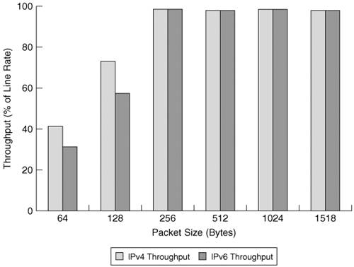
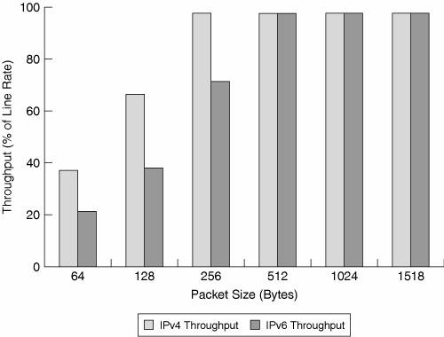
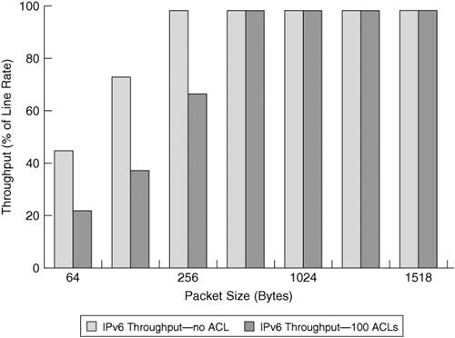
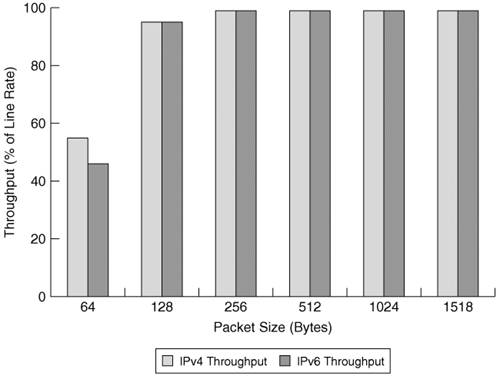
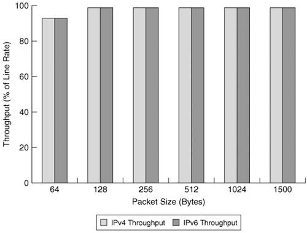
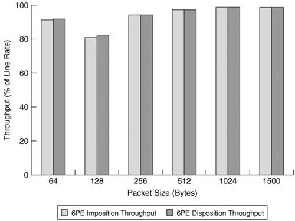

The Right Router for the JobWhen choosing a router for a certain role in a network, performance is not the only factor considered. Others are equally important, such as the following:
All these factors reflect certain aspects of a router's design. Previous sections highlighted some of the IPv6-specific challenges faced by a router's control and forwarding planes. Ultimately, a router's performance is determined by its implementation of the control and forwarding functions as well as its integration of the IPv6 protocol. For this reason, it is important to have an idea of the overall design of the evaluated router when analyzing its performance data. Router Architecture OverviewRouters evolved from mere specialized computers where all processing is software based to sophisticated devices where functionality is shared between software running on powerful CPUs and highly specialized hardware. Routers are becoming more powerful, more reliable, and more scalable; but all this comes at a cost. It is therefore important to build the right router for the right market segment. This explains the multitude of router types available from which to choose. Software Versus Hardware ForwardingThe control-plane functions of a router are always performed in software. On the other hand, packet forwarding along with some advanced features can be performed by dedicated hardware resources. Based on the implementation of the forwarding plane, routers can be classified as follows:
Note A packet that cannot be handled by the hardware is usually punted to software processing by default. This is not true for all router vendors. Hardware-assisted forwarding often provides the best forwarding performance. This advantage comes at the expense of versatility. The dedicated hardware is designed to support a certain set of features, so additional features require its redesign. For this reason, hardware-forwarding-based platforms are generally well positioned in or close to the network core and edge. There the interfaces are high speed, and the focus is on forwarding performance rather than feature richness. Software-forwarding-based platforms are more suited in the access layer, where the interfaces are lower speed, and various features are being used. Both types of routers are present in the Cisco product line:
Centralized Versus Distributed ForwardingA router can take all its forwarding decisions in a centralized manner or it can distribute the function among multiple intelligent subsystems. This design choice separates routers in two categories:
Note All forwarding engines involved in the decision-making process have to support IPv6. If they do not, the router defaults to a centralized mode of operation. The distributed architectures are particularly important for larger, modular routers that have to scale well with additional linecards. When the forwarding decision making is distributed to these intelligent cards, the router performance is not impacted by an increase in the number of interfaces and modules. This type of router is prevalent at the core and the edge of the network. Examples of distributed, IPv6-capable routers from the Cisco family include the following:
Note A distributed architecture also allows software forwarding platforms to have a performance close to line rate and that scales linearly as cards are added. This is the case of the 7500 Cisco routers. The concepts presented in this section represent a high-level overview of router architecture. These concepts can help you classify routers and have certain performance expectations from them based on their design. However, today's routers are complex systems, and there is a lot more to a complete and thorough discussion of their architecture than what is covered in this brief discussion. For more detail on this topic, refer to the book Inside Cisco IOS Software Architecture (CCIE Professional Development) by Vijay Bollapragada, et al. IPv6 Forwarding Performance of Cisco RoutersArmed with an understanding of the various router architectures and the methodology to test their performance, it is time to see the differences between their IPv4 and IPv6 performance. This section presents forwarding performance examples for the two protocol types on Cisco routers that target various segments of a network. Low-End RoutersThe low-end routers are typically deployed in the access layer of the network. They generally have low speed and few interfaces. Because they are software-based routers, they are easily enabled to support IPv6. The Cisco product line from the 830 series to the Cisco 3800 series can be easily enabled for IPv6 when it is upgraded to one of the supported Cisco IOS software release, such as 12.2T, 12.3, 12.4, 12.3T, and 12.4T. Low-end routers have a centralized architecture. Note CEF is available for IPv6 (Cisco Expressing Forwarding v6 and distributed Cisco Expressing Forwarding v6) starting with Cisco IOS Release 12.2(13)T. Despite being software platforms, many of the low-end routers use powerful CPUs that enable them to achieve line-rate packet forwarding on their interfaces. To provide encryption services, which are particularly CPU intensive, hardware assistance might be needed to sustain the same performances as the other services. Table 11-1 presents an example of how IPv6 compares to IPv4 performance on a low-end router from the Cisco 3700 series. The throughput was determined between two Fast Ethernet interfaces, with bidirectional traffic and no advanced features enabled. The theoretical maximum throughput for the interface type analyzed is also listed for reference. Figure 11-3 is a graphical representation of the forwarding performance in percentage of the targeted line rate.
Figure 11-3. Example of IPv4 Versus IPv6 Forwarding Performance of a Low-End Router (Cisco 3725 - FastE) Note IMIX is a 7:4:1 distribution of Ethernet-encapsulated packets of sizes 64, 570, and 1518 bytes. This leads to a 353-byte packet-size average. Note Sometimes the performance numbers are multiplied by a factor of two when bidirectional traffic is used during testing. For this reason, it is important to fully qualify the test methodology used. It is worth noting that line-rate forwarding is obtained before the IMIX packet size, which represents a likely packet-size distribution in an operational network. Mid-Range RoutersIn the case of mid-range routers, finding the balance between cost, features, and performance becomes even more important. Routers in this market segment can be positioned in different roles and have to perform multiple functions from access to distribution/aggregation and even core at times. The versatility required of the mid-range platforms is reflected in the multitude of router architectures applied to them. Software and hardware forwarding, as well as centralized and distributed architectures, are all present. Leveraging powerful CPUs allows routers with low density of ports to deliver competitive forwarding performance while maintaining the edge in terms of feature richness. Table 11-2 shows the performance data of a Cisco-software-based, centralized forwarding mid-range platform. The performance is measured with bidirectional traffic between two Gigabit Ethernet interfaces on a 7304 router with an NPE-G100 processor. Figure 11-4 is a graphical representation of the information in Table 11-2. It shows IPv4 versus IPv6 throughput performance in percentage of targeted line rate.
Figure 11-4. Example of IPv4 Versus IPv6 Forwarding Performance of a Mid-Range Router (Cisco 7304 - GigE) The IPv6 forwarding performance is at line rate below IMIX average packet sizes. On the other hand, mid-range routers from this family can maintain high forwarding performance even with advanced features enabled such as access control lists (ACLs). This is not always the case with mid-range hardware platforms available on the market. Table 11-3 shows the impact of ACLs on the performance of a Cisco 7200 router with an NPE-G1 processor. Unidirectional traffic was used and 100 ACLs were enabled on the ingress interface. The data is graphically represented in Figure 11-5.
Figure 11-5. IPv6 Forwarding Performance With and Without ACLs (Cisco 7206) Note If a router is evaluated in a role that involves the extensive use of advanced features such as ACLs, it is important to evaluate the impact of these features on its forwarding performance. Note The router performance when running advanced features is of particular importance in the case of IPv6. Transition mechanisms such as IPv6 over IPv4 tunneling are falling in this category, so it is important to evaluate a router's performance in this context. Software platforms are well positioned in this case because packet switching is done in software for both native and tunneled IPv6 traffic. Hardware assist for IPv6 over IPv4 tunneling is not generally available. When a mid-range platform is targeted for an aggregation role, a centralized, software forwarding design might be challenged by the high number of interfaces involved. In a distributed architecture, however, the forwarding performance is scaling linearly when interfaces are added to the system. An example of such a platform is the Cisco 7500 that leverages the distributed Cisco Express Forwarding (dCEF) feature. An example of forwarding performance numbers measured for the OC-3 interface of this router is shown in Table 11-4. Figure 11-6 also shows this data.
Figure 11-6. Example of IPv4 Versus IPv6 Forwarding Performance of a Mid-Range Router (Cisco 7500 OC3).Higher performance needs generally make hardware forwarding assistance necessary in high-end routers. High-End RoutersMoving closer to the core of the network, routers need to support multiple very high-speed interfaces such as Gigabit Ethernet, 10 Gigabit Ethernet, OC-48, OC-192, and OC-768. To maintain line-rate forwarding, routers cannot rely on CPUs anymore; hardware assistance becomes necessary. To exemplify this need on high-end routers, Table 11-5 depicts the differences in performance on a Cisco Catalyst 6500 series switch and Cisco 7600 Series Router for various switching paths.
This data clearly shows the performance enhancements that come through hardware assist. Actual performance numbers for another high-end Cisco router that performs IPv6 forwarding in hardware are shown in Table 11-6.
Note Consult Cisco documentation to identify the routers and router linecards that support hardware forwarding of IPv6. Figure 11-7 shows the forwarding performance improvement at low packet sizes because of its implementation in hardware. The other advantage of hardware forwarding is that IPv4 and IPv6 traffic will not compete for processor resources. Turning IPv6 on is not going to impact the forwarding of existent IPv4 traffic. Figure 11-7. Example of IPv4 Versus IPv6 Forwarding Performance of a High-End Router (Cisco 12000 OC48) Cisco CRS-1 is its flagship of core routers, and it represents the most compelling example of high performance achieved through advanced hardware forwarding design. Independent studies by the European Advanced Networking Test Center show that it can forward IPv4 and IPv6 traffic at line rate through OC-768 (40 Gbps) interfaces with and without advanced features enabled. The system throughput for the single chassis configuration is 640 Gbps, although the multichassis configuration is 1.28 terabits per second. It also achieves line rate at these speeds for traffic mixes (85 percent IPv4, and 15 percent IPv6). 6PE Forwarding Performance6PE and 6 VPE are key migration options in the deployment of IPv6. See the section "IPv6 over 6PE" in Chapter 3, "Delivering IPv6 Unicast Services," and Chapter 7, "VPN IPv6 Architecture and Services," for details about these technologies. IPv6 forwarding performance through a 6PE environment is an important factor when weighing a certain deployment strategy. A Multiprotocol Label Switching (MPLS)-enabled core has high forwarding performance, close to line rate, of labeled traffic irrespective of the IP version of the packets. It is thus up to the PE routers to avoid reducing the end-to-end forwarding performance of IPv6 in a 6PE deployment. In the case of 6PE and 6VPE, there is a level of asymmetry in terms of forwarding performance. Routers will exhibit a certain performance when traffic flows from the IPv6 side toward the MPLS core (router performs label imposition) and when it flows in the opposite direction (router performs label disposition). For this reason, a simple bidirectional traffic test is not fully revealing because the forwarding performance result is shaped by the lowest of the performances in each individual direction. In this case, the right testing approach is to use unidirectional streams and analyze each direction separately. Note The same approach should be applied when evaluating the forwarding performance over IPv6 tunnels. Table 11-7 lists the 6PE forwarding performance data for the OC-48 ISE card of the Cisco 12000. Forwarding is hardware assisted for this platform. The performance in the "label imposition" direction shapes the overall performance on the path. In the Cisco implementation of 6PE, a different label is usually associated with each prefix, so no IPv6 lookup is performed on the egress 6PE. For this reason, the expected performance in the "label disposition" direction is the usual MPLS performance (line rate on this card). This forwarding data is represented graphically in Figure 11-8.
Figure 11-8. 6PE Forwarding Performance in the Label Imposition and Label Disposition Directions (Cisco 12000 OC48) The forwarding performance for 6PE is close to line rate for most (and the relevant) packet sizes. Similar high performance is also available with software-switched platforms, and that certainly qualifies the 6PE solution for large-scale, high-performance deployments. |